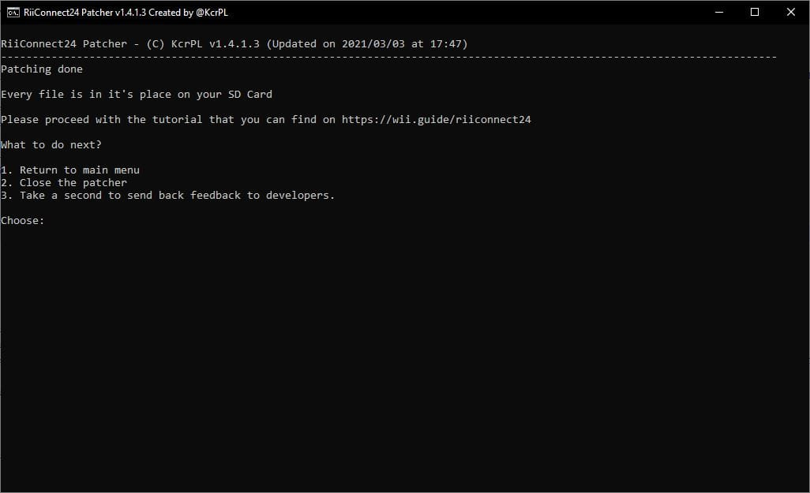

RiiConnect24
Solltest du hinsichtlich dieses Tutorials Hilfe benötigen, trete bitte dem RiiConnect24 Discord-Server bei (empfohlen), oder kontaktiere uns per E-Mail unter [email protected].

RiiConnect24 erlaubt es dir, eingestellte Dienste von WiiConnect24 zu benutzen, was den Nachrichtenkanal, Wetterkanal, Meinungskanal, Nintendo-Kanal und Mii-Wettbewerbskanal, sowie Wii Mail beinhaltet.
Diese Anleitung ist nur für normale Wiis gedacht.
- Folge dieser Anleitung, falls du RiiConnect24 auf einer vWii (Wii-Modus auf der Wii U) installieren möchtest.
- Folge dieser Anleitung, falls du RiiConnect24 in Dolphin installieren möchtest.
INSTALLIEREN SIE NICHT RIICONNECT24 AUF EINER WII MINI! Es wird nicht funktionieren und es wird das System bricken.
Voraussetzungen
- Eine SD-Karte oder ein USB-Laufwerk
- Eine Wii mit Internetverbindung
- Ein Computer
- RiiConnect24 Patcher (Windows und Unix)
Anleitung
Abschnitt 1 - RiiConnect24 Patcher herunterladen
Du kannst den RiiConnect24 Discord server (empfohlen) beitreten, oder für weitere Unterstützung uns eine e-Mail an [email protected] senden.
- Klicke oben auf den Link um zur GitHub-Seite zu gelangen, auf welcher sich der Patcher befindet.
- Lade
RiiConnect24Patcher.batherunter für Windows, oderRiiConnect24Patcher.shfür Unix-Systeme - Unter Windows startest du die
RiiConnect24Patcher.bat. Auf Unix-Systemen öffne das Terminal und gibbashein, ziehe anschließend dieRiiConnect24Patcher.shauf das Terminal und drücke Enter. Es sollte folgendermaßen aussehen:bash RiiConnect24Patcher.sh. - Drücke 1 um “
Start” auszuwählen und bestätige die Eingabe mitENTER. (NOTE: Diese Screenshots stammen von der Windows-Version des Patcher.)
- Select the device you’re patching for.

- Für diese Anleitung wähle “
Installiere RiiConnect24 auf deiner Wii” aus
- Wähle “
Express (Empfohlen)”. Hier wird alles installiert was du benötigst.
- Select your region.

- Während wir dabei sind, kann RiiConnect24 Patcher zusätzlich einige andere optionale Kanäle herunterladen, die nicht RiiConnect24-orientiert sind.
[X]repräsentiert die gewählte Option. Drücke einfach 5 undENTERwenn du nicht interessiert bist.
- Verbinde deine SD-Karte oder dein USB-Laufwerk mit deinem Computer und wähle “
1”.
- Wenn dein Gerät erfolgreich erkannt wurde, wähle “
1”. Wenn nicht, stelle sicher, dass ein Ordner namensappsauf deiner SD-Karte oder deinem USB-Laufwerk vorhanden ist und versuche es erneut.
- Be patient…

- Nachdem es fertig ist, würden wir uns freuen, wenn Sie sich eine Minute Zeit nehmen, um anonymes Feedback an uns zu senden. Wenn Sie es nicht wollen, schließen Sie den Patcher. Alle Dateien sollten bereits auf deiner SD-Karte sein. 

- Falls nicht alles automatisch auf deine SD-Karte oder dein USB-Laufwerk kopiert wurde, kopiere den
WAD-undapps--Ordner direkt neben dieRiiConnect24Patcher.batauf deine SD-Karte oder dein USB-Laufwerk.
Abschnitt 2 - WADs Installieren
Sie werden nun die gepatchten IOS und Channel WADs installieren, die für die Verwendung von RiiConnect24 benötigt werden.
- Verbinde deine SD-Karte bzw. dein USB-Laufwerk mit deiner Wii.
- Starte den Homebrew-Kanal auf deiner Wii.
- Starte Wii Mod Lite.
- Mithilfe der rechten Steuerkreuztaste auf deiner Wii-Fernbedienung, wähle
WAD Managerund wähle dann denwad-Ordner. - Markieren Sie alle WADs im Ordner, indem Sie die + Taste drücken, um sie auszuwählen. Hast du alle markiert, drücke zweimal A um die WADs zu installieren.
- Falls du einen Fehler bekommst, der besagt, dass bereits ein Title mit einer höheren Version installiert ist (error -1035), gehe zurück zum WAD-Auswahlmenü und drücke die Minus-Taste auf der ausgewählten WAD um sie zu deinstalliert, dann starte die Installation erneut.
- Nach erfolgreicher Installation drücke den Home-Knopf um zum Homebrew-Kanal zurückzukehren.
Abschnitt 3 - nwc24msg.cfg patchen
Du wirst nun deine nwc24msg.cfg-Datei patchen, was für die Benutzung von Wii Mail erforderlich ist.
- Starte den RiiConnect24 Mail Patcher.
- Es sollte nur einige Sekunden dauern, um deine nwc24msg.cfg zu patchen. Wenn es abgeschlossen ist, drücke die HOME-Taste zum beenden.
Du kannst den RiiConnect24 Discord server (empfohlen) beitreten, oder für weitere Unterstützung uns eine e-Mail an [email protected] senden.
Abschnitt 4 - Verbindung
Ab dem 16. Juni 2022 ändert sich die RiiConnect24-DNS. Genaueres dazu erfährst du hier.
Du wirst nun die DNS-Adressen zu unseren Servern einsetzen. Die ist optional aber empfohlen, da es den Funktionsumfang von RiiConnect24 und Wiimmfi erweitert.
- Gehe in die
Wii-Optionen. - Gehe in die
Wii-Systemeinstellungen. - Gehe auf
Seite 2, wähle dannInternet. - Gehe auf
Verbindungseinstellungen. - Wähle deine derzeitige Verbindung aus.
- Gehe auf
Ändern. - Gehe auf
DNS automatisch beziehen(Nicht IP-Adresse), wähle dannNeinund gehe dann aufDetaileinstellungen. - Setze
167.86.108.126als primäre DNS-Adresse. - Setze
1.1.1.1als sekundäre DNS-Adresse. - Wähle
Bestätigen, dannSpeichern. - Wähle
OKum einen Verbindungstest durchzuführen. - Wenn der Verbindungstest erfolgreich war, wähle
Nein, um das Wii-Systemupdate zu überspringen. - Gehe auf
WiiConnect24, anschließend erneut aufWiiConnect24und stelle sicher, dass es eingeschaltet ist. - Zurück im WiiConnect24-Menü, gehe auf
Verbindung bei Standbyund stelle sicher, dass dies eingeschaltet ist. - Bei
Blinksignalempfehlen wir dir, die Helligkeit aufSchwachoderStarkeinzustellen, dies ist aber optional. - Als letztes geht es in die
Internet-Einstellungen, wähle anschließendNutzungsbedingungenoderVertrag/Kontaktund bestätige mitJa. Bitte lies dir alles durch.
It’s common to get error FORE000006 on the Forecast Channel after installing RiiConnect24. If you get it, make sure your Wii’s to the correct date and time, then wait no more than an hour and it may start working. [If you still get error FORE000006 or if you get NEWS000006, you will need to delete your SYSCONF with RC24-Clear-Tool].
You will get error 268503 when loading the Nintendo Channel. This is normal. You can bypass the error by pressing OK.
If you get error 107245, then you have not installed the patched IOS. Make sure you install IOS31 and IOS80 with Wii Mod Lite, along with any other patched WADs.
If you get error 107304 or you see Nintendo’s User Agreement without RiiConnect24’s logo, that means your ISP (Internet Service Provider) or network is blocking the use of a DNS. You can set Auto-Obtain DNS to On to solve this. RiiConnect24 will still work without it. Or, you can use our DNS-Server program.
If you’re getting errors such as WiiConnect24 and Wii Shop Channel currently not being offered in your country, go to Wii Settings -> Last Page -> Country and change it to United Kingdom. You will get this error when using a country that we don’t support. Contact us at [email protected] if you need more help.
Weiter zu Wiimmfi
Wiimmfi ermöglicht es dir, Spiele online spielen zu können obwohl die Nintendo Wi-Fi Connection eingestellt wurde. Dies zu installieren ist nicht zwingend erforderlich.
Continue to WiiLink
WiiLink lets you use the Japanese-exclusive channels known as Wii no Ma and Digicam Print Channel. Dies zu installieren ist nicht zwingend erforderlich.
Fortfahren in der Seitennavigation
Wir haben viele weitere Tutorials, welche dir gefallen könnten.